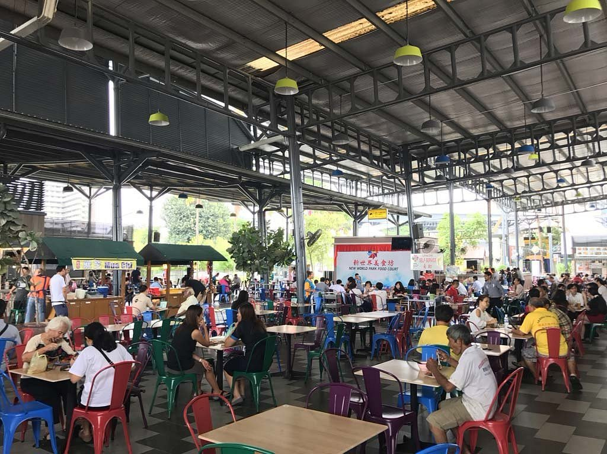
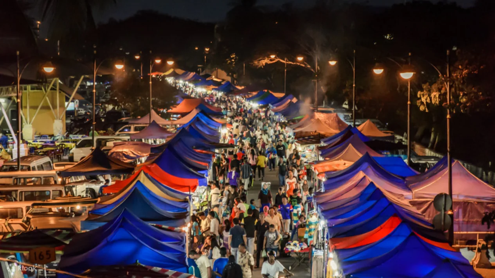

Food Culture in Malaysia
About Food Culture in Malaysia
Malaysia’s food culture is a vibrant mosaic, deeply rooted in the country’s diverse ethnic heritage.
Reflecting centuries of trade, migration, and colonization, Malaysian cuisine is a dynamic blend of
Malay, Chinese, Indian, and indigenous influences. This rich culinary tapestry is celebrated through
a wide array of flavors, spices, and cooking traditions, each contributing to the country's unique
gastronomic identity.
From the aromatic spices of Malay dishes to the savory richness of Chinese and Indian cuisine,
Malaysia’s regional specialties showcase local ingredients and cultural practices. Whether enjoyed
in bustling street markets, local food stalls, or sophisticated restaurants, the variety of dishes
offers an exciting and varied culinary experience.
Malaysian food culture is not only a reflection of its multicultural makeup but also a testament to
the country’s ability to bring people together through the universal language of food. Traditional
recipes passed down through generations blend seamlessly with modern fusion creations, making
Malaysian cuisine an integral part of the nation’s identity and an enduring celebration of its
diverse heritage.
Malaysian Food Heritage
Malaysia’s food heritage is a vibrant tapestry shaped by its diverse ethnicities and cultural exchanges. The cuisine reflects the contributions of Malays, Chinese, and Indians, alongside indigenous 'Bumiputera' groups such as the Kadazan and Iban. Additionally, the culinary landscape is enriched by influences from smaller communities, including Thai, Indonesian, Vietnamese, Cambodian, Korean, and Japanese cultures. This blend results in a dynamic food scene where traditional recipes are preserved and modern innovations thrive. From the aromatic spices of Malay dishes and the complex flavors of Nyonya cuisine to the unique contributions of indigenous and smaller ethnic groups, Malaysia’s food culture showcases its multicultural society and its ability to blend and innovate while honoring its rich traditions.
Religious Influences in Malaysian Food
Religion plays a significant role in shaping the dietary practices and culinary traditions of Malaysia. Islam, the dominant religion, influences the Malay population’s preference for 'halal' (meaning permissible) food, which adheres to Islamic dietary laws. Hinduism and Buddhism among the Indian and Chinese communities, respectively, contribute to the presence of vegetarian dishes and the avoidance of beef in some Indian cuisines. Religious festivals such as Ramadan, Deepavali, and Chinese New Year also bring about special dishes that are integral to these celebrations, further embedding religious influences into the fabric of Malaysian food culture.
Malay Influences
Malay cuisine forms the backbone of Malaysian food culture, distinguished by its use of
aromatic
spices, coconut milk, and fresh herbs. Deeply rooted in the tradition of the Malay
Peninsular, which
was a spice trading hub from the 15th century, Malay food incorporates a rich blend of
flavors from
neighboring regions such as Indonesia, Thailand, and Singapore. Iconic dishes like Nasi
Lemak, a
fragrant coconut rice served with sambal, anchovies, boiled egg, and cucumber, embody
the essence of
Malay culinary traditions. In the northern regions, Nasi Lemak tends to be lighter,
while in the
southern areas, dishes like Beef Rendang offer a richer, more substantial experience
with its
slow-cooked beef in a thick, spicy coconut milk sauce. Satay, skewered and grilled meat
served with
a savory peanut sauce, further highlights the depth of flavor in Malay cuisine.
Halal dietary laws significantly shape Malay cuisine, influencing the emphasis on
seafood and the
exclusion of pork. Dishes such as Keropok Lekor, a mackerel-based cracker, and
Otak-Otak, a spiced
fish cake wrapped in banana leaves, reflect this focus. Ingredients like lemongrass,
ginger, and
turmeric are commonly used, contributing to the complex and aromatic flavors. Sambal, a
spicy
fish-based sauce with a mix of spices, shallots, chili, lemongrass, and garlic, adds
distinctive
heat and depth, showcasing the rich cultural and culinary heritage of Malay food.
Chinese Influences
Chinese influences in Malaysian cuisine are eclectic and deeply rooted in the culinary
traditions of
southern China, particularly from regions like Cantonese and Fujian, where most Chinese
immigrants
originated. This influence is evident in popular Malaysian dishes such as Dim Sum, Char
Kway Teow,
and Hainanese Chicken Rice, which have become staples in the local diet. Ingredients
like noodles,
bean sprouts, tofu, and soy sauce, along with stir-frying techniques, are integral to
Malaysian
cooking.
The fusion of Chinese flavors with local ingredients has led to unique Malaysian dishes
like Wantan
Mee and Claypot Chicken Rice. Additionally, dishes such as Curry Laksa and Curry Mee
exemplify the
blending of Chinese and Malaysian culinary traditions, particularly in the 'Nyonya'
style that
merges Chinese origins with local Malay influences. This rich blend highlights the
diverse and
dynamic nature of Malaysian cuisine.
India Influences

Indian cuisine has profoundly shaped Malaysian food culture, particularly through the
Tamil Muslim
community, known as mamaks. Dishes such as Roti Canai (flaky flatbread), Nasi Kandar
(rice served
with an assortment of curries), and Thosai (fermented rice and lentil crepe) are popular
and widely
enjoyed. Indian spices, including cumin, coriander, and cardamom, are integral to
Malaysian cooking,
contributing to the rich flavors of dishes like mutton and dhal curry. The use of
ingredients such
as turmeric, fenugreek, and curry leaves reflects the deep impact of Indian culinary
traditions.
While the cow is considered sacred among India’s Hindu population, so it’s common to see
more
vegetable or fish-based dishes as part of the Indian influence. The influence of Indian
cuisine is
further evident in the prevalence of breads like paratha, chapati, and naan, which are
commonly
paired with curries and sauces. Traditional South Indian elements, such as banana leaf
meals
featuring rice, curries, and pickles, are also prominent. Malaysian Indian cuisine
incorporates a
diverse range of ingredients and dishes, blending traditional Indian flavors with local
practices
and tastes.
Nyonya Influences
Nyonya cuisine, also known as Peranakan cuisine, represents a unique fusion of Chinese
and Malay
culinary traditions that originated from the cultural interaction between Chinese
immigrants and
local Malays in Malaysia and Indonesia. This distinctive cuisine blends Chinese cooking
techniques
with Malay spices and ingredients, resulting in dishes characterized by complex flavors
and a
balance of spicy, sour, and sweet elements.
This unique blend is evident in dishes like Laksa (spicy noodle soup) and Ayam Penyet
(smashed fried
chicken), which combine Chinese ingredients with Malay spices. Nyonya cuisine highlights
the rich
culinary heritage of the Peranakan community, contributing to Malaysia's diverse and
vibrant food
landscape.
Malaysian Street Food Culture
The social aspect of dining is deeply ingrained in Malaysian culture, and in bustling cities like Kuala Lumpur and Penang, the street food scene is a vibrant and mouth-watering spectacle. Malaysia’s food culture operates on a 24-hour cycle, with street food outlets offering quick and tasty dishes at all hours. Indian Mamaks, known for their near 24-hour service, cater to late-night cravings, contributing significantly to the nation’s diverse food landscape. The open-air street food culture is immensely popular in Malaysia as it provides flexibility, allowing people to choose what and when they want to eat in a lively, communal setting.
Hawker Stalls
Hawker stalls are a cornerstone of Malaysia’s food culture, offering a wide range of delicious, affordable, and authentic street food. Located at roadsides, city corners, and village streets across the country, these small, family-run stalls serve local favorites such as Char Kway Teow, Laksa, Satay, and Nasi Lemak. Though they typically offer a limited selection of dishes, their focus on perfecting key items—like noodle dishes, rice plates, and snacks, ensures high quality and affordability. This emphasis on simplicity and efficiency makes hawker stalls a popular choice for both locals and visitors seeking flavorful and budget-friendly meals.
Hawker Centres
Hawker centres are large, open-air complexes that house multiple hawker stalls under one roof, providing a one-stop destination for food lovers to explore a variety of Malaysian dishes. These centres are popular dining spots for locals and tourists, offering everything from Malay, Chinese, and Indian food to fusion and specialty dishes. Hawker centres are known for their lively atmosphere, diverse food options, and affordable prices, making them an essential part of Malaysia’s food culture. Diners can enjoy a banquet-style feast by mixing and matching dishes from different stalls, reflecting the communal and eclectic nature of Malaysian dining.
Mamaks
Mamak stalls and restaurants, run by Indian-Muslims, are a beloved institution in Malaysia, known for their casual, 24-hour service and wide-ranging menu. These eateries serve a mix of Indian, Malay, and fusion dishes, such as Roti Canai, Nasi Kandar, Mee Goreng (fried noodles), and Teh Tarik (pulled tea). Mamaks are more than just places to eat; they are social hubs where people gather to chat, watch football, and enjoy a meal at any time of day or night. The friendly, inclusive atmosphere of Mamaks makes them a quintessential part of Malaysian food culture.
Night Markets
Night markets, or "Pasar Malam," are a vibrant part of Malaysia's food scene, offering a wide variety of street food, fresh produce, and local goods. These markets typically operate in the evenings and are a popular destination for those looking to sample an array of traditional Malaysian dishes, snacks, and desserts in a bustling, festive atmosphere. Night markets are known for their lively ambiance, with vendors calling out to attract customers and the smell of grilling satay, frying noodles, and freshly baked pastries filling the air. They are a must-visit for anyone looking to experience the dynamic and diverse flavors of Malaysian cuisine.
